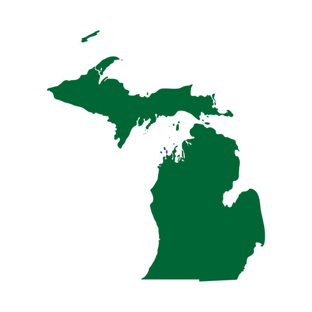

While I live in Kentucky, I was originally born in Holland, Michigan. I ended up moving down here about halfway through the fifth grade. The reason me and my family (Mom, Sister, Stepdad) moved here was for both job opporunities and to be closer to my Mothers parents.
Where I'm From
